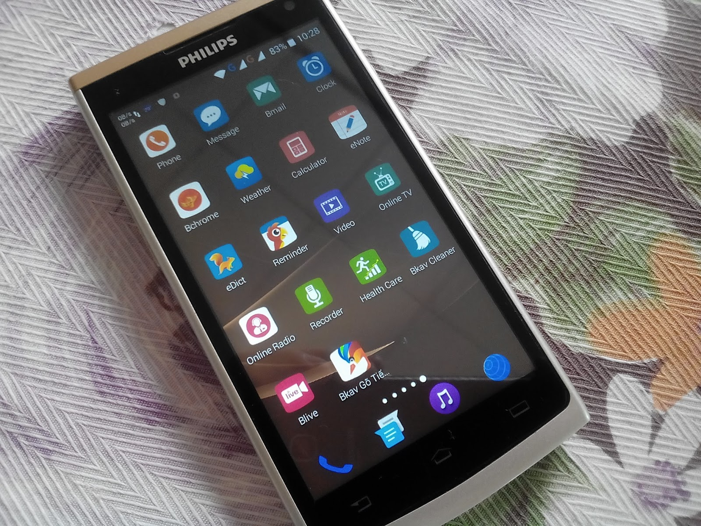
Trên trang
choimobile.vn xuất hiện bài viết download app của BPhone và mình đã download về thử. Các bạn có thể xem chi tiết và download tại
đây.
Các app được port lên:
- BLauncher - Launcher mặc định của BPhone
- BTalk - Trình gọi điện, nhắn tin của Bkav
- BChrome - Trình duyệt của Bkav dựa trên mã nguồn mở Chromium
- Blive - Stream trực tiếp sử dụng điện thoại của bạn
- Bmail - Trình quản lí thư điện thử hỗ trợ rất nhiều nhà cung cấp của Bkav
- Bkav Cleaner - Trình dọn rác của Bkav
- Bkav Gõ Tiếng Việt - Bàn phím của BOS
- BMS (Bkav Mobile Security)
- eDict - Tra từ điển
- eNote - Ứng dụng ghi chú
- Gallery
- Video
- TV Online
- Radio Online
- Đồng Hồ
- Ghi Âm
- Máy Tính
- Nhắc Việc
- Theo Dõi Sức Khỏe
- Thời Tiết
Máy mình thử nghiệm là Philips S388 chạy Android Kitkat 4.4.2 và đây là cảm nhận riêng của mình nên các bạn có thấy khác biệt thì thông cảm cho :)
I. BLauncher, Máy Tính, Gallery không sử dụng được:
Thứ mình cài vào đầu tiên là BLauncher, tuy nhiên trong quá trình cài đặt app thì máy báo lỗi không cài được. Cho dù mình chép file apk vào system/app đặt -> set permission cũng không được nên đành bỏ cuộc :(
Thực tế BLauncher có thể chạy được nhưng mình đọc bài trên choimobile thì máy phải chạy từ 4.4.4 trở lên mới xài được BLauncher.
App Máy Tính thì mình cài được nhưng chạy app thì bị out ra ngay lập tức.
Gallery cũng không cài được.
II. BTalk: Giao diện đẹp, tính năng tốt nhưng không ổn định:
BTalk thật ra không có gì mới, đó là một app nhắn tin, gọi điện OTT được giới thiệu vào năm ngoái cho Android (Link
CH Play). Nhưng với BPhone thì BTalk đã kiêm luôn chức năng gọi điện, nhắn tin, cuộc gọi nhỡ, danh bạ.
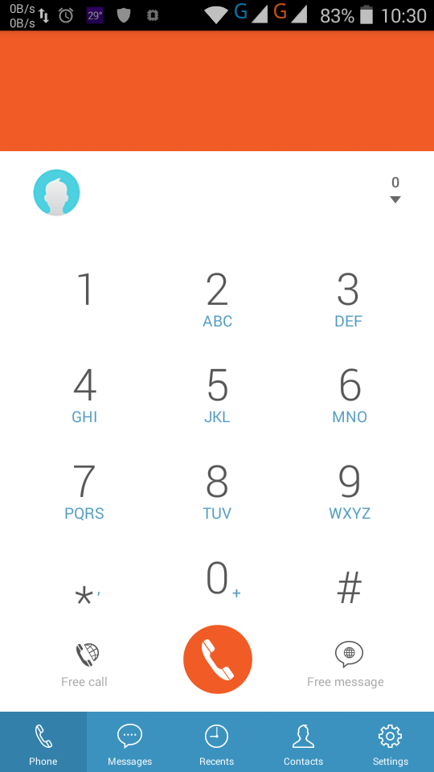
Giao diện điện thoại của BTalk
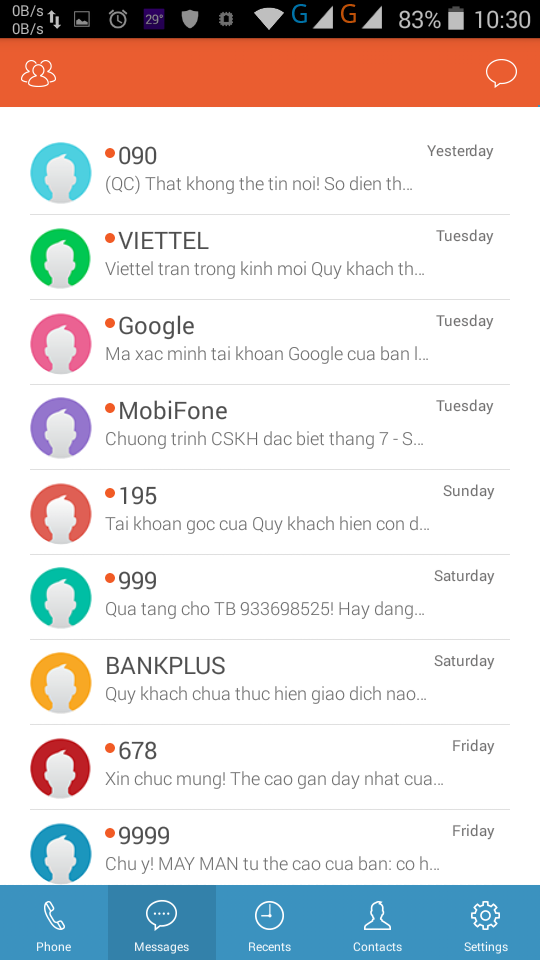
App có giao diện theo phong cách phẳng tạo cảm giác trẻ trung và mới lạ. Cách bố trí các chức năng theo tab và bố cục cũng khá hợp lí.
Tuy nhiên app thường xuyên bị crash (do là hàng port) . Cái này thì phải chấp nhận thôi. Muốn xài hàng xịn thì móc 11 triệu để mua BPhone cấu hình thấp nhất.
III. BChrome: Trình duyệt ngon, có gesture, Night Mode
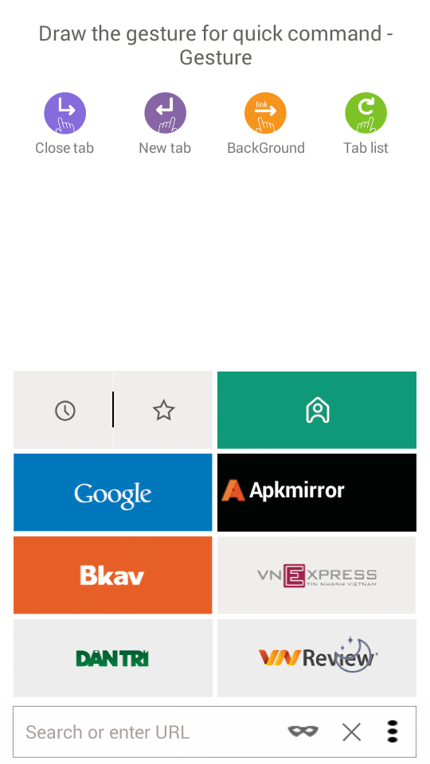
BChrome - trình duyệt dựa trên mã nguồn mở Chromium, sở hữu một giao diện khác biệt so với các trình duyệt trên nền tảng Android, đó là thanh địa chỉ nằm phía dưới tương tự IE trên Windows Phone. Ngoài ra, BChrome còn có các gesture giúp sử dụng máy tốt hơn như vẽ chữ L để đóng tab, L ngược để mở tab mới, kéo sang phải đẻ mở Background, chữ C để mở Tab list.
Một tính năng hay trong BChrome đó là duyệt web ban đêm Night Mode. Khi mở Night Mode, trang web sẽ chuyển sang dạng âm bản, hình ảnh sẽ giảm độ sáng giúp việc đọc báo vào buổi tối được tốt hơn.
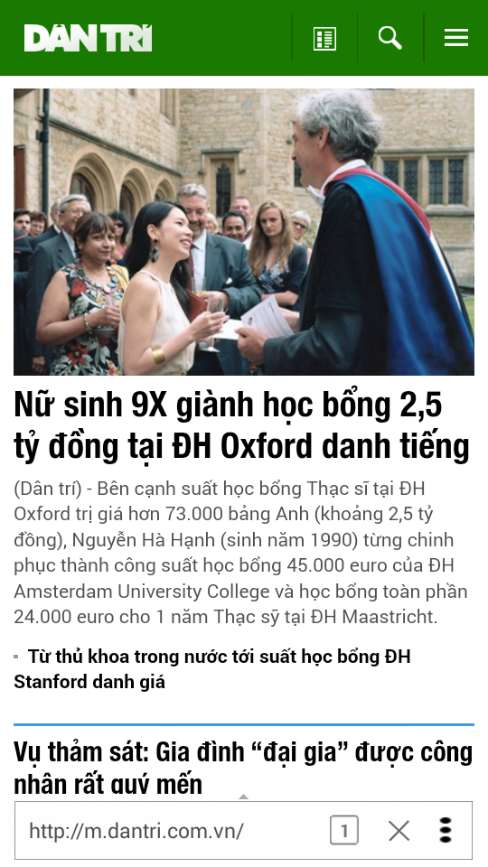
Chế độ bình thường (Day Mode)
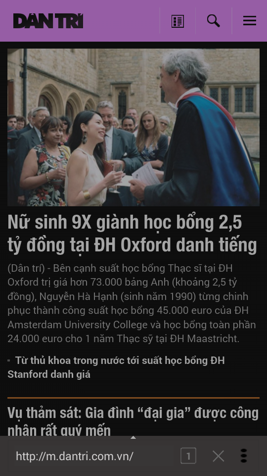
Chuyển sang chế độ ban đêm (Night Mode)
Về tốc độ thì do sử dụng nhân Chromium nên tốc độ không thua kém Chrome trên Android.
IV. BMail:
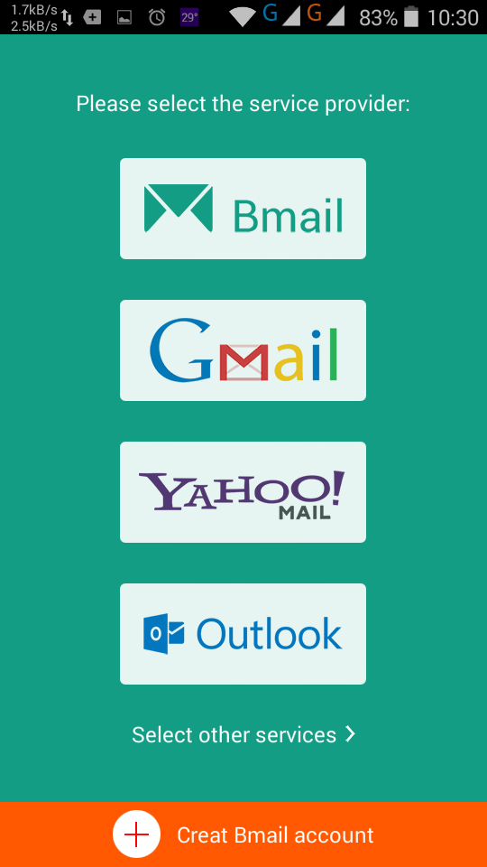
BMail là một trình duyệt mail đa tài khoản, sử dụng được nhiều dịch vụ như GMail, Yahoo! Mail, Microsoft Outlook, BMail (dịch vụ e-mail của Bkav) và các dịch vụ e-mail khác. Giao diện đơn giản, tính năng đầy đủ, tải e-mail cũng rất nhanh.
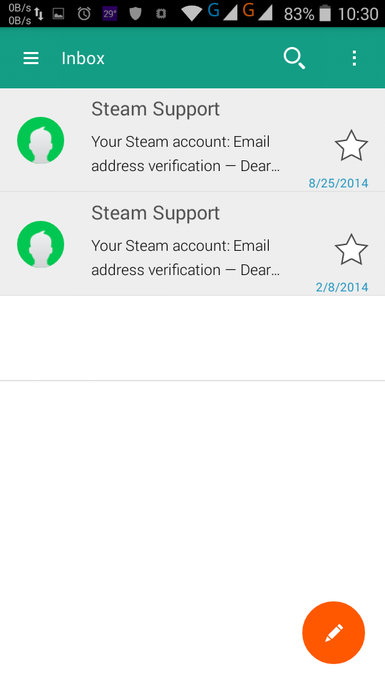
V. TV Online và Radio Online:
TV Online là trình xem TV trên mạng Internet với các kênh của VTV, ANTV, BBC, VTVCab,.. Tuy nhiên còn rất hạn chế.
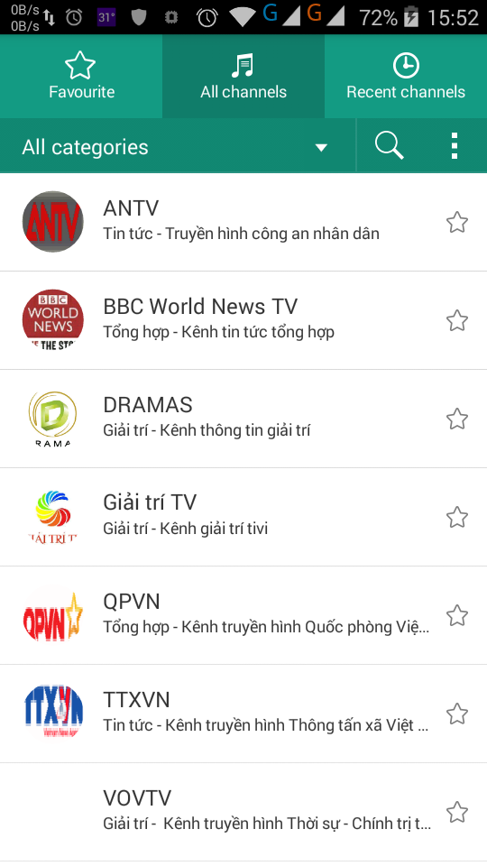
Bù lại, Radio Online lại cực kì phong phú. Từ radio trong nước, nhạc chọn lọc đến các kênh radio quốc tế.
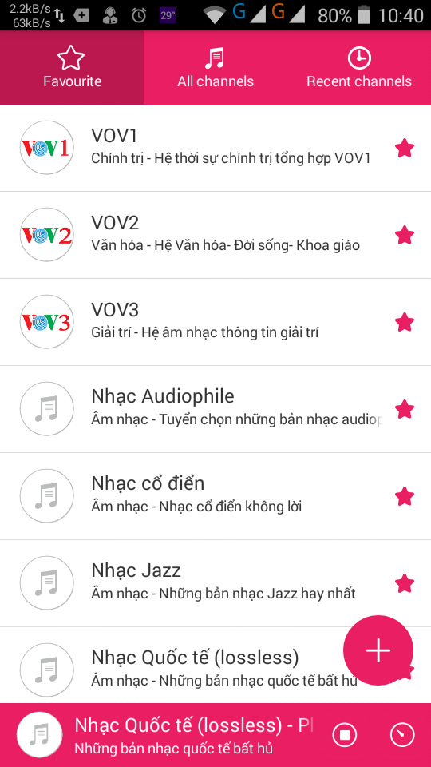
VI. eDict, eNote và Bkav Gõ Tiếng Việt:
eDict là app từ điển tra cứu nhanh, bạn chỉ cần gõ vào ô tìm kiếm, chọn từ và xem nghĩa của từ và các ví dụ. Bạn cũng có thể xem từ được dịch qua các công cụ dịch khác như Google Translate, Bing Translator. Bạn cũng không cần chọn từ điển A-V, V-A hay A-A. Chỉ cần kéo qua phải để xem từ của các từ điển khác
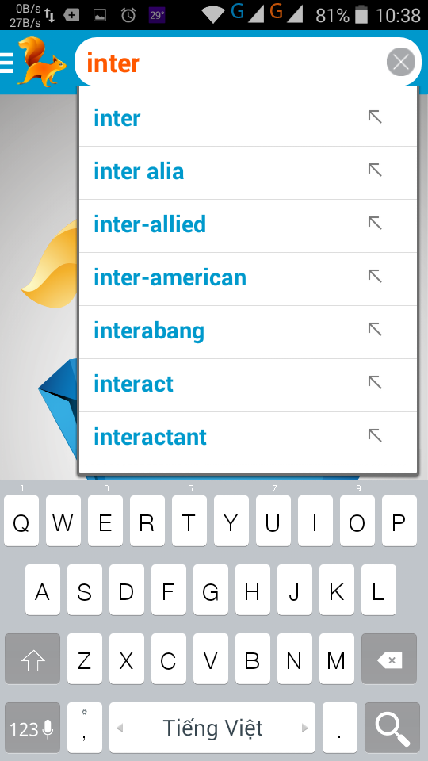
Bàn phím của BPhone gõ rất đã, sắp xếp các chữ cái khá hợp lí nên gõ không bị sai. Nhìn cách bố trí rất giống iOS. Bạn cũng có thể download Bkav GTV trên CH Play:
https://play.google.com/store/apps/details?id=bkav.android.inputmethod.gtv
eNote là trình ghi chú gọn nhẹ với các cách ghi chú khác nhau như hình ảnh, âm thanh, check list và văn bản.
eNote hỗ trợ cả vẽ (nhấn nút
+ ->
Hình Ảnh ->
Vẽ Hình) . Bạn có thể chọn loại bút, độ lớn ngòi, màu, gôm, hình, text.
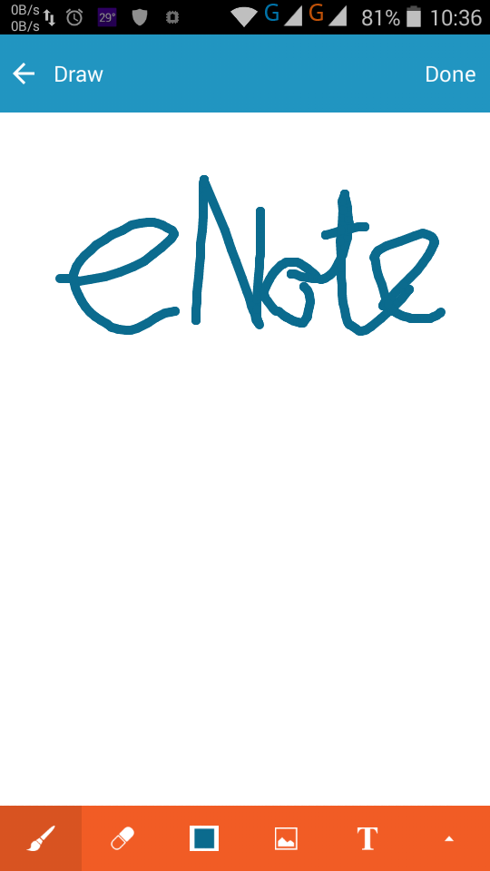
VII. Nhắc Việc, Theo Dõi Sức Khoẻ, Thời Tiết:
App Nhắc Việc nhìn khá sơ sài với nhắc uống thuốc, tiệc cưới, sinh nhật, công việc.
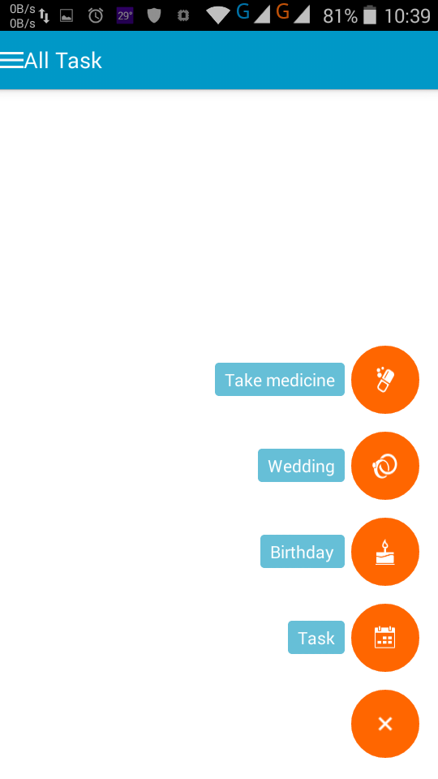
Theo Dõi Sức Khoẻ giúp tính số phút hoạt động, số Calo tiêu thụ được. Tuy nhiên giao diện nhìn không được đẹp mắt lắm, nhất là phần thiết lập.
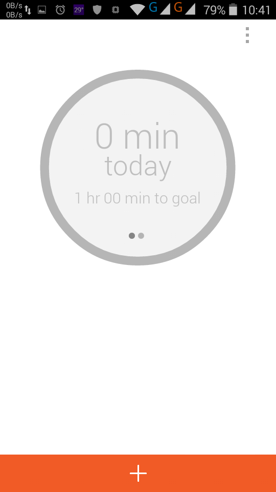
Thời Tiết với giao diện đẹp, đơn giản, bạn chỉ cần kéo qua trái hay phải để xem thời tiết của các khu vực khác nhau.
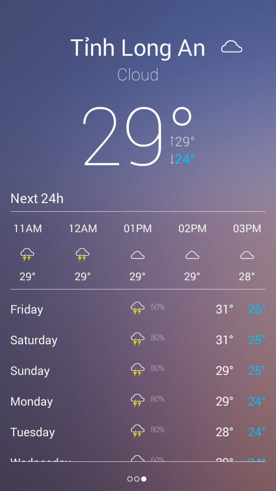
VIII. BLive, BMS, Bkav Cleaner:
Blive là app stream trực tiếp từ điện thoại của bạn, có thể share link stream lên MXH.
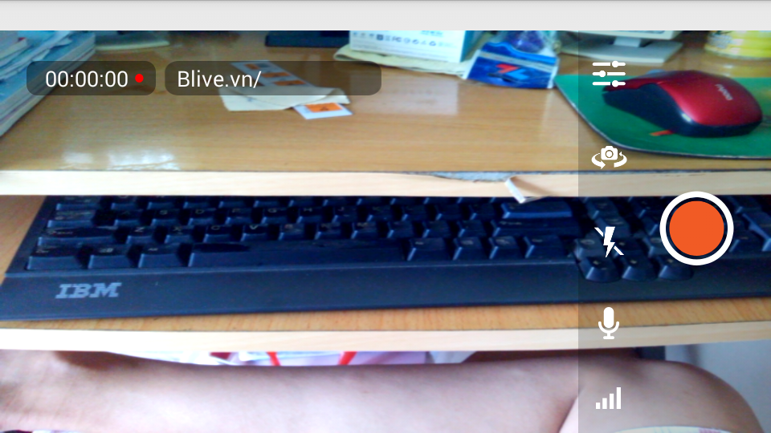
BMS (Bkav Mobile Security) . Cái này quá quen thuộc rồi, khỏi cần nói gì thêm :D
Bkav Cleaner, trình dọn rác của Bkav, thật ra đã có từ lâu trên CH Play:
https://play.google.com/store/apps/details?id=com.bkav.android.bcleaner
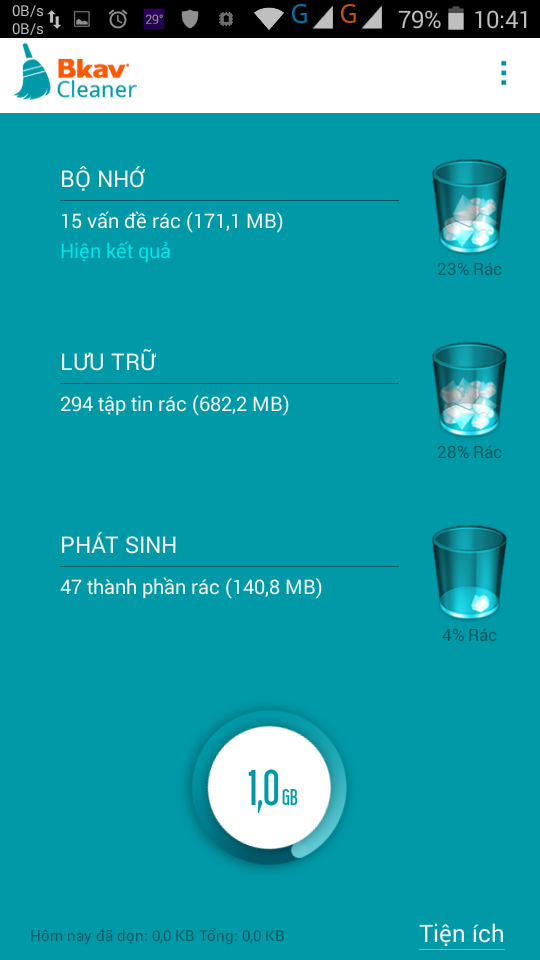
IX. Một số app khác: Video, Đồng Hồ, Ghi Âm
Những app này không có tính năng đặc biệt. Tuy nhiên giao diện đẹp hơn app mặc định của Google.
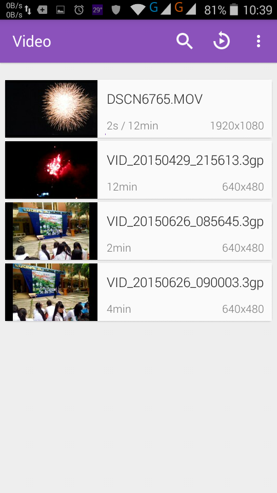
Video
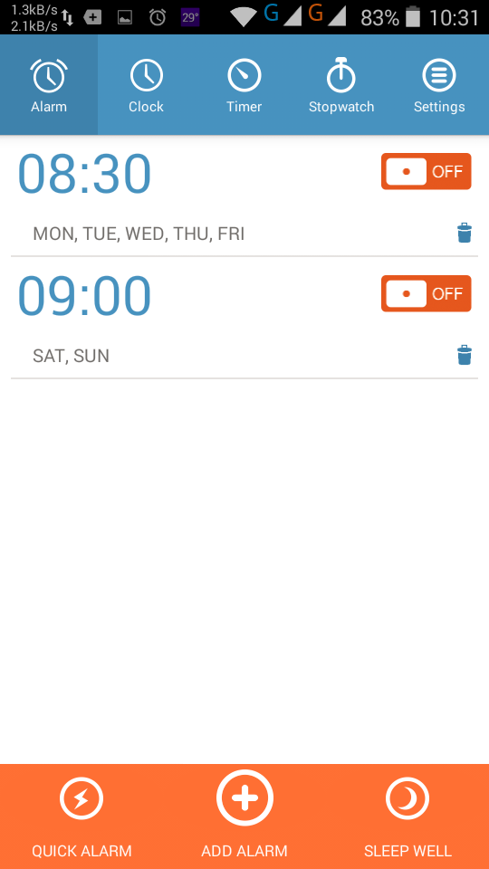
Đồng Hồ
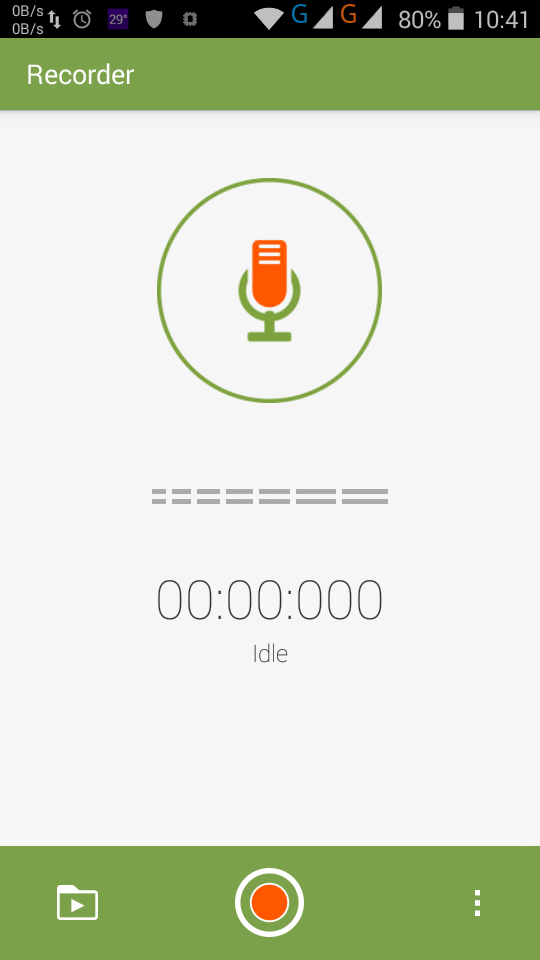
Ghi Âm
X. Kết:
Ưu: Giao diện đẹp, tính năng tốt.
Nhược: Giao diện vài app còn sơ sài.
Hiện tại mình chưa thấy ai port 2 app Camera và Nhạc, mình rất muốn thử app Nhạc xem có hơn app Sony Music (Walkman) chỗ nào không.


.png)


.png)
{kind=link}
{kind=link}
{kind=link}
{kind=link}
{kind=link}
{kind=link}
{kind=link}
{kind=link}
{kind=link}
{kind=link}
{kind=link}
{kind=link}
{kind=link}
{kind=link}
{kind=link}
{kind=link}
{kind=link}
{kind=link}
{kind=link}
{kind=link}